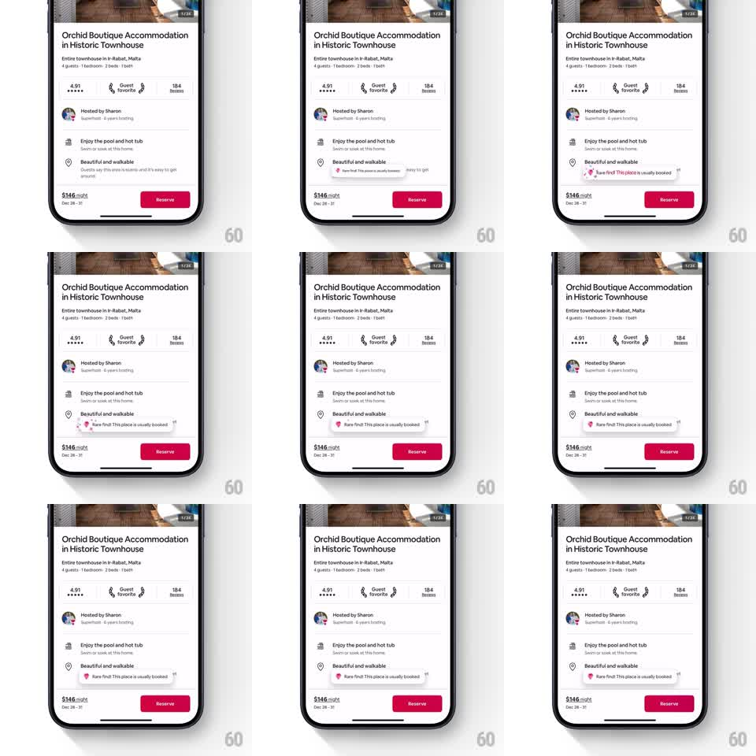

Media
Frame-by-frame

Rebuild this interaction 1:1: Airbnb's "Rare find" badge - a small pill ("Rare find! This place is usually booked") that expands out of a perk row with a springy pop and a subtle sparkle burst, drawing the eye without breaking the page's calm.

Rebuild this interaction 1:1: Airbnb's "Rare find" badge - a small pill ("Rare find! This place is usually booked") that expands out of a perk row with a springy pop and a subtle sparkle burst, drawing the eye without breaking the page's calm.
## Integration
Integration: stack-agnostic spec - springs given as stiffness/damping, timed motions as duration + curve; map every value to your framework and animation library of choice.
## Scene
Listing page mid-section: perks list ("Enjoy the pool and hot tub", "Beautiful and walkable"). The badge appears attached to the second perk row, overlapping the row's right side with a quote-mark ornament.
## Motion spec
Pattern: one-shot attention pop, triggers when the perk scrolls into view.
- Badge scales 0 -> 1 from its left anchor (spring ~340/17, ~450ms) with a visible overshoot to ~1.08.
- At peak scale (~250ms in), a sparkle burst: 4-6 four-point star particles emit from the badge's edges (translate 12-28px outward, scale 0 -> 1 -> 0, 400ms, staggered 40ms, opacity out at the end).
- Badge settles to rest size; text inside stays static throughout.
- No loop - it fires once per page view.
## Calibration
- The overshoot is the whole personality: firm spring, one bounce, no wobble tail.
- Sparkles are a garnish (small, quick, gone in under half a second).
## Reduced motion
Badge fades in at final size (200ms), no sparkles.
## Don't miss
- Scale origin is the badge's left edge near the perk icon, so it grows out of the row.
- The pill overlaps the row boundary slightly - it's a sticker, not an inline chip.